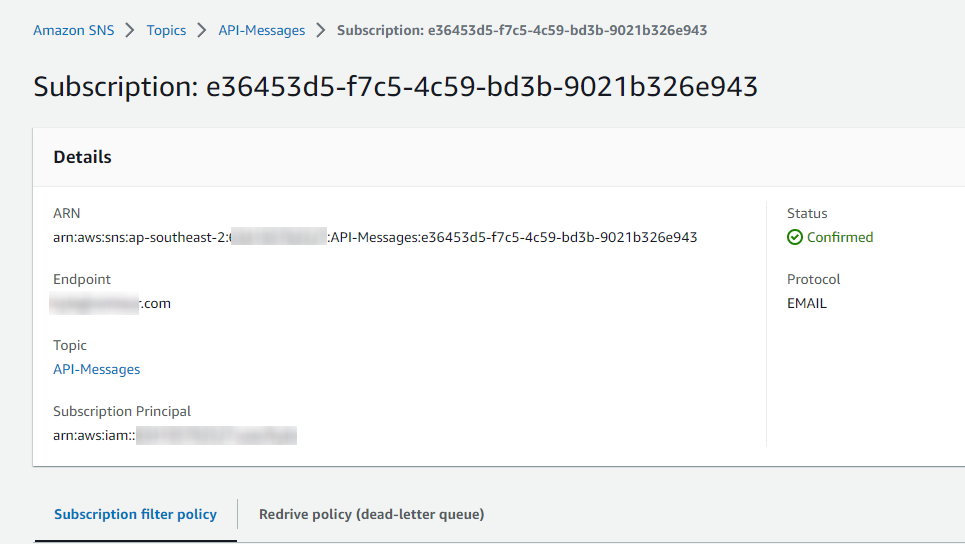

API Gateway integration with Lambda, Mock, and AWS Service integrations
Overview
We’re going to set up an API Gateway REST API, with a few different endpoints, including Mock, Lambda, and AWS service (SNS) integrations.
You can read about the differences between REST and HTTP APIs here: https://docs.aws.amazon.com/apigateway/latest/developerguide/http-api-vs-rest.html
For this demo we will use REST, because it allows the use of Mock integrations.
I will be creating this in the ap-southeast-2 region, so all links to the console will be there. Make sure you change region if you’re deploying elsewhere.
Instructions
Stage 1 - Setting up SNS
Head to the SNS console: https://ap-southeast-2.console.aws.amazon.com/sns/v3/home?region=ap-southeast-2#/topics
Click on Create topic
Set the Type to “Standard”
Set the Name to be “API-Messages”
Under Access policy, leave the Method as “Basic”
Change Define who can publish messages to the topic to “Only the specified AWS accounts” and enter your account ID (found in the top right of the console)
Change Define who can subscribe to this topic to “Only the specified AWS accounts” and enter your account ID again
In the real world, this should be locked down further to only the resources you want publishing to the topic, but in this temporary example set up, locking down to just the account is fine and safe enough
Leave all other options as default
Click on Create topic
On the next page, click on Create subscription
Change the Protocol to “Email”
In the Endpoint field, enter your personal email
Click Create subscription
You will receive a confirmation email shortly after, with a link you need to click on. This tells SNS that you’re happy to receive emails from the topic, and prevents spam from being sent via SNS.
Side note: While writing this, my confirmation went to Spam in Gmail, so don’t forget to check there.
Your subscription should now be in the Confirmed state:

Stage 2 - Create the Lambda
Head to the Lambda console: https://ap-southeast-2.console.aws.amazon.com/lambda/home?region=ap-southeast-2#/functions
Click Create function
Leave Author from scratch selected
Set the Function name to api-return-ip
Set the Runtime to “Python 3.9”
Leave the Architecture as “x86_64”
Click Create function
In the Code tab, enter the following code:
def lambda_handler(event, context):
return {
'statusCode': 200,
'headers': {},
'body': event['requestContext']['identity']['sourceIp'],
'isBase64Encoded': False
}
This is an extremely basic function that just returns the source IP of the requester (you).
Don’t forget to click Deploy to save the function.

Stage 3 - Create the API
Head to the API Gateway console: https://ap-southeast-2.console.aws.amazon.com/apigateway/main/apis?region=ap-southeast-2
Click Create API
Select REST API → Build
Make sure you don’t select “REST API Private”.

Leave the Protocol and “Create new API” options as is, and set your API name to whatever you like

Click Create API
Once that’s done you will see all of the “Resources” (endpoints / API paths), right now we have none, so click on Actions and then “Create Resource”

This first resource we create will be for the Mock integration, so we’ll just name it “Mock”. The Resource Path is the URL path you will use to call it, so in this case it would be something like
https://abcdef1234.execute-api.ap-southeast-2.amazonaws.com/mock

Next we have to attach a Method. A Method is the HTTP method that the resource (path) will accept, such as “GET”, “POST”, “DELETE”, etc.
For the Mock integration, we will just use “GET”.
Make sure you are in the /mock resource

Then click Actions then “Create Method”

Select “GET”

Then click the tick to accept.
Once that’s done, API Gateway will present a list of possible integrations. For this one, select “Mock” then click Save

Once that’s done, click on “Integration Response”

This is where we tell API Gateway what the Mock integration should respond with.
Expand the 200 status line, then the Mapping Templates section, and set the Content-Type to application/json

Click on the tick, then in the template section, enter the following (you can replace the message with whatever you like)
{
"statusCode": 200,
"message": "This response is mocking you"
}
Then click Save (it won’t give any feedback that it’s saved, but it has)

Then click Save on the method response

That’s all done. Now we’ll set up the Lambda integration.
Go back to the root (/)resource

Then click Actions then Create Resource
For this one, set the resource name to “Lambda”, and leave the Resource Path as “/lambda”
Click Create Resource
Click on Actions then Create Method. This will also be a “GET”

On the next page, set the “Integration type” to “Lambda function”
Enable “Use Lambda Proxy integration”
Once you click the “Lambda Function” text field, it should drop down with a list of Lambda’s in that region, select the one you created earlier
Leave all other options as is, and click Save

You should see a popup telling you that you’re about to give API Gateway permission to invoke your Lambda, click OK
Lastly we’ll set up another resource for SNS.
For this one, we will need to set up an IAM role that API Gateway will use to publish messages to SNS.
Head to the IAM Console: https://us-east-1.console.aws.amazon.com/iamv2/home?region=ap-southeast-2#/roles
Go to the Roles page, and click Create Role

Under “Trusted entity”, select “AWS Service”, and in the drop-down, select API Gateway. Make sure you select the radio button for “API Gateway” as well.

Click Next
On the Permissions page, click Next
Lastly, set the role name to “api-gw-sns-role” then click Create role
Now go into the role you just created

Click on Add permissions then Create inline policy

Go to the JSON tab and enter the following
{
"Version": "2012-10-17",
"Statement": [
{
"Effect": "Allow",
"Action": "sns:Publish",
"Resource": "*"
}
]
}
Click Review policy
Under “Review policy” set the name to “SnsPublish” and click Create policy
On the summary page, copy the ARN of the role you just created, you will need it for the next step

Now head back to the API Gateway console: https://ap-southeast-2.console.aws.amazon.com/apigateway/main/apis?region=ap-southeast-2
Go back into your REST API
Go back to the root resource

Then click Actions then Create Resource
For this one, set the resource name to “SNS”, and leave the Resource Path as “/sns”
Click Create Resource
Click on Actions then Create Method.
This one will be a “POST”.
On the next page, set the “Integration type” to “AWS Service”
Set the AWS Region as the same region as your API / SNS (for me this is ap-southeast-2)
Set the AWS Service as “Simple Notification Service (SNS)”
Leave the AWS Subdomain blank
Set the HTTP method to POST
Leave the Action Type as “Use action name”
Set the “Action” to “Publish”
Under Execution Role you need to put the ARN of the IAM role you just created for SNS.
Leave the rest of the form as is, and click Save

If you’re wondering where we got the “Publish” action, and where to find other Action types, you can view them all in the API Reference for the service: https://docs.aws.amazon.com/sns/latest/api/API_Operations.html
There’s a few ways to pass your message through API Gateway to the AWS service, but to make things easy for this example, we’re going to use Query Strings. Query Strings are found in the URL of websites after a question mark, e.g. https://google.com/search?q=hello, where “q=hello” is the query string.
Go to the “/sns” resource, and the “POST” method, and click “Method Request”

Under “URL Query String Parameters” click “Add query string” and enter “TopicArn” and click the tick.
Then click “Add query string” and enter “Message” and click the tick.
Your query string should look like this

Go back to the “/sns” resource, and the “POST” method, and click “Integration Request”

Under “URL Query String Parameters” click “Add query string”
Set the Name to “Message” and the Mapped from to method.request.querystring.Message
Click the tick to save
Click “Add query string” again
Set the Name to “TopicArn” and the Mapped from to method.request.querystring.TopicArn
Click the tick to save
Now we need to Deploy the API.
Click on Actions, then Deploy API

In the pop up window, set the “Deployment stage” to “[New Stage]”, and the “Stage name” to “v1”.

The “Stage name” can really be anything, and is used to direct API requests to different “versions” of the API. So you could have a “dev” stage, and “prod” stage, or just use the standard “v1”, “v2”, etc.
Click Deploy
Once that’s done, you will be sent to the Stage Editor page, where you can set things like Rate Limiting, WAF associations, caching, logs, etc. We don’t need to change any of these for this demo.
At the top of the screen you will see your API URL

Copy that URL for the next step.
Stage 4 - Testing the API
The Lambda and Mock resources can be tested in the browser. By default, any URL you enter into your browser performs a GET request (and remember, only our Lambda and Mock resources have the GET method set).
Mock
If we visit our API URL and append “/mock” we should see the response we entered earlier

The reason we want a JSON output rather than a friendly human readable one, is because working with JSON in programming languages makes things much easier. Your code or application could read the “statusCode” key and see a 200 value, and then it could read the “message” key and see it’s value.
Lambda
Now if we visit our “/lambda” URL we should see our function response (your IP address)

SNS
For the last endpoint, we can’t use a browser because browsers by default only perform “GET” requests, so we have a couple of options to test this endpoint.
Command Line
If you’re comfortable using the command line (Linux, Mac, or WSL for Windows), follow these steps. If you would prefer to use a GUI, skip ahead.
In your CLI, run the following command (replace “REGION” and “ACCOUNT-ID” with your region and account ID), and don’t forget to replace the URL with your API gateway URL
curl -X POST -G -d 'TopicArn=arn:aws:sns:REGION:ACCOUNT-ID:API-Messages' -d 'Message=Hello!' https://abc123def.execute-api.ap-southeast-2.amazonaws.com/v1/sns
Note if you want to use spaces in your message, because query parameters are URL encoded, spaces need to be replaced with a +, so for example:
curl -X POST -G -d 'TopicArn=arn:aws:sns:REGION:ACCOUNT-ID:API-Messages' -d 'Message=I+like+sending+long+messages' https://abc123def.execute-api.ap-southeast-2.amazonaws.com/v1/sns
GUI (AWS Console)
The API Gateway console provides a handy way to test your API.

On the testing page, under “Query Strings”, enter the following. Replace the TopicArn with your SNS Topic ARN, and the message with whatever you like.
TopicArn=arn:aws:sns:REGION:ACCOUNT-ID:API-Messages&Message=APIs+are+fun
Note if you want to use spaces in your message, because query parameters are URL encoded, spaces need to be replaced with a +
Scroll down and click Test

GUI (Postman)
We can also use a popular API testing tool called Postman. It’s available for Windows, Mac, and Linux
It can be downloaded for free from their website: https://www.postman.com/downloads/
I won’t write instructions on installing the program, it’s fairly self explanatory and isn’t related to this demo.
Once you’ve opened Postman, click on the + up the top of the application to open a new tab. Set the method to POST, and enter your API Gateway URL.
You can then enter the two Query Parameters we set earlier:
TopicArn which is the ARN of your SNS topic.
Message which is the message you want to send to the topic

Once you’ve entered all that, hit Send
No matter which method you chose, you should receive an email from SNS containing the message in your Query String

Stage 5 - Cleaning up
Head to the API Gateway console: https://ap-southeast-2.console.aws.amazon.com/apigateway/main/apis?region=ap-southeast-2
Select the API you created, and click Actions then Delete

Head to the SNS console: https://ap-southeast-2.console.aws.amazon.com/sns/v3/home?region=ap-southeast-2#/topics
Go to Topics, select the Topic you created earlier, and click Delete

In the confirmation box, enter “delete me” and click Delete
Go to Subscriptions, select the Subscription you created for your email, and click Delete

Head to the IAM console: https://us-east-1.console.aws.amazon.com/iamv2/home?region=ap-southeast-2#/roles
Under Roles, search for "api-gw-sns-role”
Select the role we created earlier, and click Delete

Type “api-gw-sns-role” into the confirmation field, and click Delete
Head to the Lambda console: https://ap-southeast-2.console.aws.amazon.com/lambda/home?region=ap-southeast-2#/functions
Select the function we created earlier, and click Actions then Delete

Enter “delete” in the confirmation window, and then click Delete
Head to the Cloudwatch Logs console: https://ap-southeast-2.console.aws.amazon.com/cloudwatch/home?region=ap-southeast-2#logsV2:log-groups
Search for the "api-return-ip” Log Group, select the log group , click Actions then Delete

In the confirmation popup, click Delete